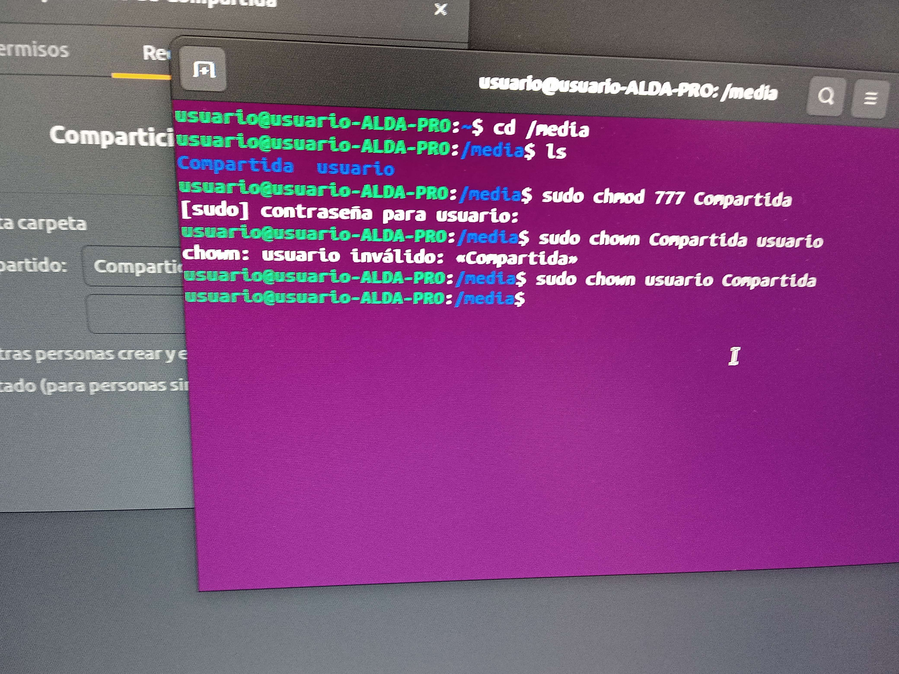
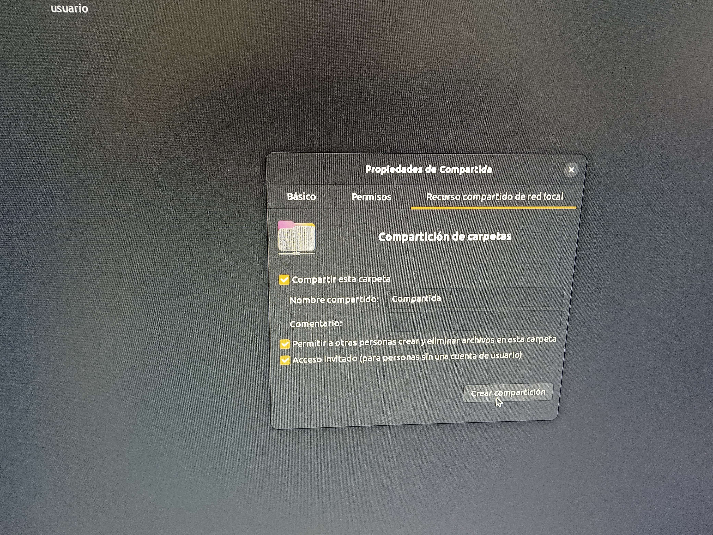

En este apartado, realizaremos los preparativos para realizar copias/recuperaciones remotas usando Samba
En primer lugar, necesitaremos crear una carpeta compartida, en la cual se almacenarán los datos (en este caso la imagen), de los elementos compartidos mediante Samba
Una vez entremos al menu de clonecilla, nos saldrá el siguiente menu:
Al crear la carpeta, necesitaremos modificar 2 cosas:
Que el dueño sea el usuario con el que accedemos al dispositivo mediante samba, en este caso, el usuario usuario
Que la carpeta tenga permisos de lectura y escritura para todos los usuarios
Por último, en propiedades, debemos definir la carpeta como carpeta compartida.
Para ello, simplemente haremos click derecho en la carpeta y marcamos las opciones definidas en la imagen
Ahora podremos usar esta carpeta para guardar archivos enviados mediante samba, siempre y cuando estemos en la misma red local.